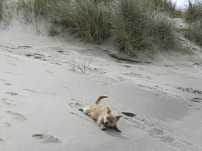
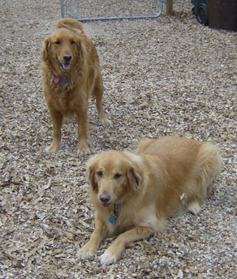
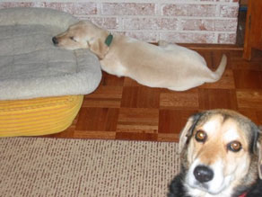
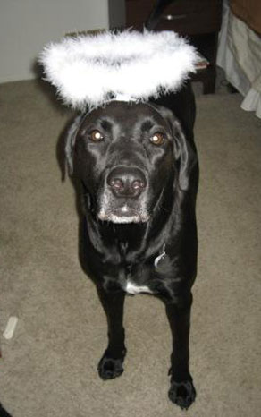
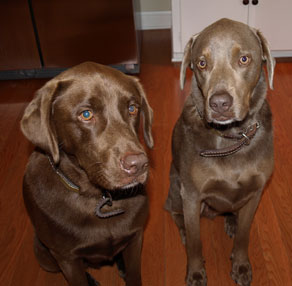

We are a family of dog lovers. We believe that dogs need lots of sunshine, human contact, play time and freedom to do what they do naturally. Our mission is to provide a place where dogs can board in a low stress environment where they can get plenty of exercise, socialization and exploration.
To ensure the best possible care, we only accept a small number of guests at a time in addition to our permanent residents. We offer our guests spacious, shaded yards, the ability to play with compatible companions and lots of access to nature. Dogs spend the best parts of the day playing outdoors and sleep in enclosed climate controlled kennel rooms at night.
A day at our homestead consists of morning rotations, breakfast, and yard play. Indoor rest time occurs midday followed by afternoon play. Later, supper is served, evening rotations follow and then bedtime.
We hope your dog(s) enjoy their stay with us.
Contact us to schedule a tour of our facility!
Boarding: $27 per day/date*
Daycare: $20 per dog
*(additional dogs in the same household are $23 per boarding day/date)
Meals, medication administration (if applicable), individual and group play.
Reservations should be made with as much advance notice as possible, as we serve during the busiest times of the year and offer a limited capacity. If you need to cancel a reservation, also let us know as soon as possible. Cancellations not given with a 48-hour notice are subject to a $25.00 cancellation fee.
Mother Rock Star Dogs is open most all 365 days per year with the exception of Thanksgiving Day and Christmas Day. We sometimes close for a short time for revitialization or a family vacation, but this is rare and do our best to inform our current client community ahead of time.
All drop-off and pick-ups are by appointment only between the hours of 7 a.m. and 6 p.m. We extend a grace period until 7 p.m. If you are running later than that please reschedule your pick-up for the following day. Please allow 30 - 45 minutes drive time when traveling from Central Austin.
Holiday Pick-up and drop-off appointment hours are as follows:
| Thanksgiving Day | Closed to Public |
| Christmas Eve | 8 a.m. – 3 p.m. |
| Christmas Day | Closed to Public |
| New Years Day | 10 a.m. – 6 p.m. |
We accept cash and checks only.
Payment is due at the time you pick up your dog/s.
Our facility is different than some in that we are family owned and operated, we live on-site and are open for year-round boarding. We do close a couple of times per year for revitalization. Please contact us for more information regarding these dates.
Reservations should be made with as much advance notice as possible, as we serve during the busiest times of the year and offer a limited capacity. If you need to cancel a reservation, also let us know as soon as possible. Cancellations not given with a 48-hour notice are subject to a $25.00 cancellation fee.
When making a reservation, please review our terms and forms. After that please contact us to set up an initial visit if you have not been directly referred by one of our existing clients so that we can meet your dog/s and ensure that we are the right match for the care needed. Concerns with new guest dogs range from issues of aggression, puppies that are extremely young and haven’t received their complete round of vaccinations, dogs with specialized needs that we might not be able to care for or other concerns such as extreme barkers, or dogs that can and will jump 4 ft. enclosures.
Mother Rock Star Dogs is situated on 1.3 acres in Garfield, Texas, 4 miles east of ABIA and 4 miles north of Hwy 71 East between Austin and Bastrop.
All visitors must provide proof that they are current on all their required vaccinations (Rabies, Distemper/Parvo and Bordetella). We recommend Bordetella be administered every 6 months. Please provide shot records at your initial visit. Owners must complete and sign the boarding information form and read and sign release forms.
All visiting dogs must be flea and tick free or treated with Frontline or Advantix 48-hours prior to their visit to the country!
Note: Actual signatures are needed of the dog/s official owner. You may return the forms either by mail or email scanned copies.
After your reservation is confirmed, we will send you detailed directions to our homestead facility if you haven’t already been here for your initial visit. We ask that you schedule appointments for your drop-off and pick-up times between the hours of 7 a.m. and 6 p.m. Please note that our appointment times are like any other appointments you may have at a doctor's office, etc. Please allow 30 - 45 minutes travel time prior to your scheduled appointment. If you are running late or early , please communicate this with us in a timely manner by calling 512/350-5624 or call our secondary emergency number 512/669-3101. We utilize all of our yards and waiting extended periods for client arrivals causes our guest dogs to lose outdoor time. We also like to create a calm environment for guest dog’s arrivals and departures. Your consideration in this matter is greatly appreciated.
To make a reservation or set up an initial visit, please contact
Annie Melvin (512) 350-5624 or motherrockstardogs@gmail.com.
We accept cash and checks only.
Payment is due at the time you pick up your dog/s.
We provide dog boarding in a low-stress, home-style environment with spacious shaded outdoor yards and climate controlled kennel rooms year-round by appointment. Please see our Dates of Operation. We do have brief closures from time to time for revitalization. You may email us regarding these dates. Advanced reservations are highly recommended in order to accommodate requests due to our limited capacity.
Mother Rock Star Dogs is situated on 1.3 acres in Garfield, Texas, 4 miles east of ABIA and 4 miles north of Hwy 71 between Austin and Bastrop. Detailed directions will be emailed to you upon your confirmed initial visit or reservation. When traveling from Central Austin, please allow 30 - 45 minutes drive time prior to your scheduled appointment. Click here to get directions using Google Maps.
We have a wonderful mix, big and small, purebred and combinations there of, most of whom get along wonderfully with each other.
We do not accept Pitbull Terriers, nor are we accepting any new Pitbull Mixes. All other breeds are welcome as long as we are able to provide the appropriate care needed. It is important that they are a good match for our facility to ensure the safety and comfort of our other guest dogs, staff and family members.
Not unless they are puppies under the age of 8 months. It has been our experience that unaltered dogs significantly effect the energy levels within the groups in a way that sometimes is not conducive to successful play.
We provide year-round boarding in a low-stress, natural environment giving our guest dogs the best care possible. We offer socialization of all sizes and ages. The only rule is “to play well with others.” Our capacity at this time is approximately 60 depending on size during the height of the busy seasons. Our goal is to allow our guest dogs as much outdoor time as possible with lots of human contact, access to nature and the ability to play with compatible companions. Our visitors typically play in groups that vary in numbers ranging in size and depending on personality. Indoors, our goal is to provide comfortable individual spaces of their own where they can eat and rest peacefully. We use large crates and cages. Bedding is provided, but clients are welcome to send their own. We feed Nurture Heavenly Holistic Harvest Dog Food, which we believe is a wonderful and (have found to be an agreeable) kibble, plus the dogs really seem to like it, but again clients are welcome to send their own food of preference. We intend to send each dog home as clean as possible, but like with kids, some play harder than others and can tend to get a bit grubby.
You will know the people who are caring for your dog rather than a staff that comes and goes. We will be able to give you honest feedback about their stay and are able to build relationships with each and every one of them. We are a great choice for active young dogs, dogs of all sizes/ages and are also a really great match for much older dogs. Most always when our elderly visitors get out here they are revitalized with all the new surroundings, they really love it!
"Boarding Kodi at Mother Rock Star Dogs is like a vacation for our him. Annie and Snoopy always do a great job of managing the dogs on hand, and of introducing Kodi and getting him integrated into the pack. Kodi is always happy to arrive, and exhausted when he leaves --- we could tell that he had played hard and been well looked after! Equally important, MRSD always makes it easy on people, too; they accommodate our travel schedule, are very convenient to the airport, and completely eliminated our usual dog boarding worries when we travel. Kodi can't wait to get back!"
-Bryan Sauer
I LOVE Mother Rock Star Dogs! They are wonderful to my dog. She gets to run around with the other dogs and she has no trouble. The atmosphere calms her down. Annie and Joe Melvin are very professional and eager to help. I'm one of their biggest fans!
-Ginger Turner.
"As an "only child" dog, Chester loves and needs the pack interaction with his buddies at MRS Dogs. He comes home relaxed and exhausted."
-Laura W.
My dog Scout is always happy to stay with Mother Rock Star Dogs when we are out of town. Scout comes back happy and well cared for every time she goes there. It is especially convenient that Annie will pick up our dog and deliver her home to us after our vacation. Thanks Mother Rock Star Dogs for providing such a wonderful environment for our dog when we are away!
-Jan Combs
"Mother Rock Star Dogs is just great. Drop offs and pick ups always run smoothly. We love the feedback about what Buzz, our boxer, has been up to and who he has played with. Most important of all, we can tell Buzz is well cared for and has fun!"
-Karen Carlander
Our dogs are our children so we are extremely grateful to have MRS Dogs as our first and only choice for boarding. Annie and Snoopy Melvin and MRS Dogs have all the bases covered. Their veterinary experience and connections with vet clinics assure us that any medical concerns that our dogs should have will be expertly addressed. The grounds of MRS Dogs are spacious and shaded by huge trees, so our Pointer and Terrier have plenty of room to “hunt” and run, while our lazier Lab and Chihuahua have lots of shade and cool earth for napping. Last but not least, MRS Dogs is a place where animals are loved and the dogs receive true affection as part of their care. We would not want to take our dogs anywhere else and now that MRS Dogs have expanded their business to year round boarding, we don't have to. We strongly recommend MRS Dogs and we look forward to them being our dogs' home away from home for many more years to come.
-Sheridan Roalson (dog mom)
-Cynthia Reynolds (dog grandma)
(Photos by Valerie Fremin)
My favorite feeling, when heading off to work or a big weekend without the dog is driving up to the Mother Rock Star Dogs driveway and watching Geoff get all excited. I don't like to travel without my dog and feel guilty when I have to. My worries melt away knowing that Annie and Snoopy and their family will not only take superb care of my sweetest baboo, but also that they will make sure that Geoff has the time of his life. When we pull up to the house he always jumps out of the car and trots straight into the yard, not even turning back for a hug from me. When I pick him up, he is smiley, happy, dirty and tired. My dog likes to play hard and I can tell when he has. He usually conks out in the car and sleeps all the way home. I wouldn't take my dog anywhere else for boarding and I am so thankful for the Melvin's hospitality. Mother Rock Star Dogs Rocks!
-Leslie Uppinghouse and Geoffy "the good dog", Spicewood TX

We love the special care and attention that MRSD gives our dog. This is made obvious to us by how happy our dog is when we drop her off and pick her up again. While we vacation, so does our dog!
-The Buehler Family
We have never before boarded our dogs. However, after the first time we visited, we fell in love with MRSDogs and knew we had found the perfect vacation spot for our goldens. Our dogs immediately fell in love with the wide-open spaces and quickly made friends with the other dogs. We felt good knowing that our pets were in such a safe, secure, loving environment while we were away from home. We highly recommend MRSDogs!
-Wes and Jacquie P.

Annie and her crew are the ONLY people we let Kensi stay with! Only problem is that Kensi really misses Annie when she has to come back home!
-Donna C.
I wouldn't have my dogs go anywhere else. My 11-month old puppy is bursting with energy and was able to run around and play with other dogs in a safe and loving environment rather than be stuck in a crate all day long. Annie is naturally gifted with animals and caters to each dog's needs/personality. She goes to great lengths to ensure the safety and well being of each “guest” and has extensive knowledge of canine behavior. It means a lot to not have to worry about my beloved pets while I am away. I know they are getting the best care and a vacation of their own. When I picked up Cisco, I was greeted by a happy, healthy, exhausted animal. Mother Rock Star Dogs is truly a special place.
-Laura K.
Mother Rock Star Dogs is more of a doggie camp then a kennel. When we came home from our vacation, it was clear that although our dog, Boo, had been away from us like a boy at camp, playing all day with new friends, roughin' it a little, and having the time of his life.
-Kim E. A.

Leaving our puppy at Mother Rock Star Dogs felt like she was staying with family. You could not ask for a warmer, friendlier, safer environment to board your pet. I know if Cheeseburger could talk, she'd be begging to go back for another visit. She received plenty of love and attention and had lots of playtime with other dogs her size. I'm not sure she wanted to leave when we picked her up! I've told all my friends about MRS Dogs and won't leave my pets with anyone else.
-Kathryn B.

I wanted to thank you and Snoopy for meeting me so early/late to accommodate my travel schedule. I really appreciate it so much. Lucy was exhausted after her week with you so I can only assume that means that she got lots of exercise and had fun. I'm so glad to be back with her though. A week away from your canine companion is tough! I'll definitely think of you guys in the future when I need a place for Lucy to stay. I really appreciate knowing that you are there and a safe and warm option for her. Have a great week!
-Jodi B.

"Mother Rock Star Dogs treats our 4-year old labs, Ash and Shasta, like the cherished family pets that they are. They will even pick them up from home and deliver them home again like chauffeured rock stars! Ash and Shasta love to go on vacation to the kennel. They certainly come home happy and healthy. We have found a trusted kennel and friend in Mother Rock Star Dogs."
-Wendy T.
Annie McReynolds, Owner/Manager
512-350-5624 (Primary)
Exene Melvin, Assistant Manager
512-769-5113
if above numbers don't respond - 512-669-3101
motherrockstardogs@gmail.com
Mother Rock Star Dogs
2811 Whirlaway Drive
Garfield, TX 78617